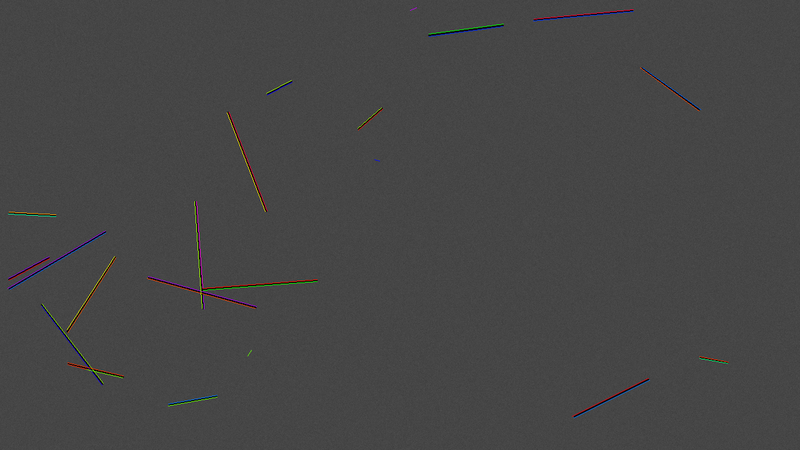
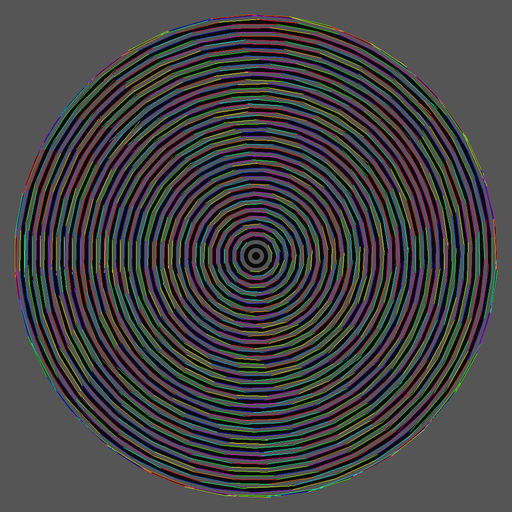
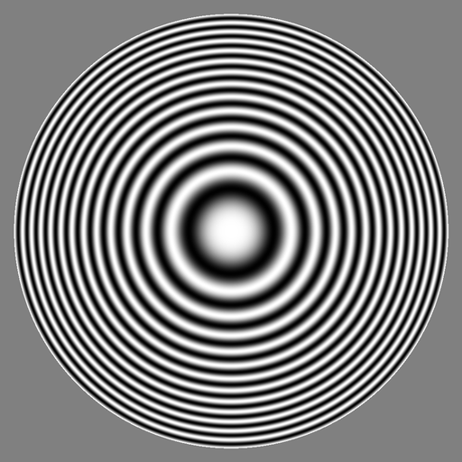
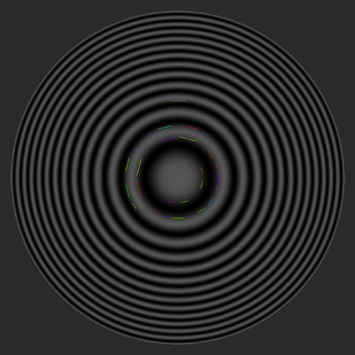
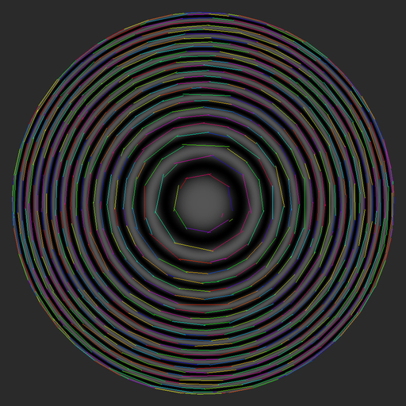
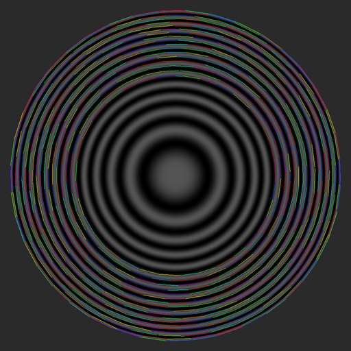
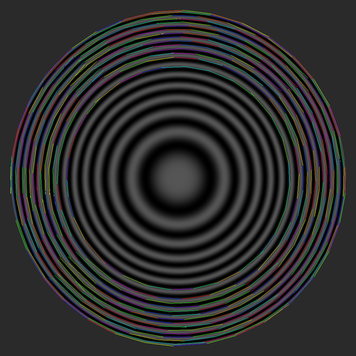
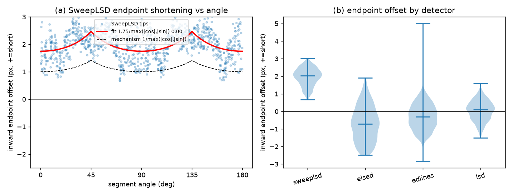
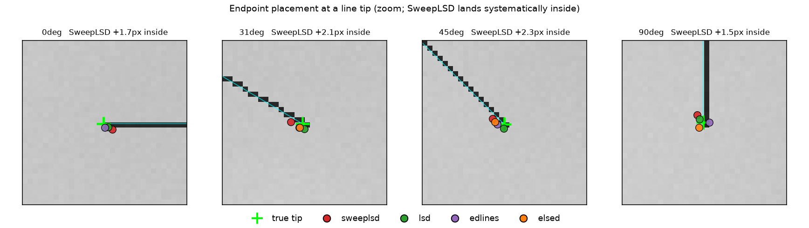

Detection quality
Synthetic ground truth with strict one-to-one matching, geometric accuracy, orientation isotropy, endpoint bias, and rotation/reflection repeatability — against genuine LSD, ED_Lib EDLines, and ELSED.
1. Protocol
Synthetic scenes (1280×720, 18 random segments, 20 images per condition) with exact
ground truth, Gaussian noise σ ∈ {0, 5, 10, 20}. Matching is strict one-to-one
(each GT segment matches at most one detection; a detection fragmented into several pieces
is penalised) — lenient one-to-many matching flattered every method and inverted rankings,
so it is not used. Every detector's main knob is swept and the best F-score
(F-max) reported, so no method is judged at an unfavourable operating point.
Baselines are the genuine author implementations (canonical LSD; ED_Lib EDLines;
ELSED built from the authors' source) — an earlier self-reimplemented "EDLines-style"
baseline underestimated the real thing badly and was retired to a clearly-labelled
fallback. One sweep asymmetry to disclose: ELSED's implementation aborts below
minLineLen ≈7–10, so its knob sweep spans 10–40 where the others reach down
to 5; its F-max points did not lie at the clipped end.
2. F-max under noise
| noise σ | SweepLSD | LSD | EDLines (ED_Lib) | ELSED |
|---|---|---|---|---|
| 0 (clean) | 0.958 | 0.936 | 0.955 | 0.991 |
| 5 | 0.959 | 0.938 | 0.950 | 0.992 |
| 10 | 0.948 | 0.788 | 0.952 | 0.990 |
| 20 | 0.905 | 0.510 | 0.951 | 0.990 |
Stated plainly: ELSED leads F-max at every noise level on this protocol — its
fused drawing-and-fitting with validation is extremely effective on synthetic bar scenes,
and essentially flat in noise. SweepLSD is second on clean and low-noise images; ED_Lib is
similarly noise-stable at a slightly lower level; LSD degrades fastest under heavy noise.
Part of the gap to ELSED is
fragmentation — under strict one-to-one matching every extra fragment of a
ground-truth line counts as a false positive, and ELSED's drawing pass jumps
discontinuities natively. SweepLSD's optional gap-tolerant collinear linker
(link_collinear, off by default; a finalization-level feature that preserves
the streaming property) re-assembles fragments across junction cuts and noise breaks and
closes part of that gap — about a fifth of it at σ20, but little on clean scenes:
F-max rises from 0.905 to 0.924 at σ20 and only from 0.958 to 0.960
on clean scenes, so on this protocol fragmentation is a noisy-scene effect.



3. Geometric accuracy (matched segments)
| detector | lateral error | direction error |
|---|---|---|
| SweepLSD | 0.12–0.13 px | 0.02–0.04° |
| ELSED | 0.12–0.13 px | 0.07–0.09° |
| EDLines (ED_Lib) | 0.12–0.13 px | 0.13–0.14° |
| LSD | 0.15 px | 0.02–0.12° |
Per-segment direction is SweepLSD's strongest axis: the scatter-moment line fit over every member pixel plus sub-pixel NMS plus the half-pixel lattice correction give it the best direction accuracy of the field — 2.2–4.4× better than ELSED and 3.5–8.7× better than ED_Lib. Lateral error does not separate them: SweepLSD, ELSED and ED_Lib sit within 0.013 px of one another with no ordering stable across noise levels, and only LSD is clearly behind. (Frame conventions are calibrated on both sides: the detector's half-pixel lattice correction is a shipped refinement, and the evaluator's GT renderer is verified to the same sampling convention — a half-pixel mismatch there would tax every detector.)
4. Orientation isotropy & curve rejection
Synthetic probes (1024×1024): a 72-sector Siemens star, a zone plate, concentric circles, and a 48-line angular fan. CoV = coefficient of variation of the length-weighted orientation histogram (lower = more isotropic).
| pattern | SweepLSD | LSD | EDLines (ED_Lib) | ELSED | ||||
|---|---|---|---|---|---|---|---|---|
| segs | CoV | segs | CoV | segs | CoV | segs | CoV | |
| Siemens star (straight spokes) | 110 | 0.74 | 108 | 0.51 | 108 | 0.59 | 108 | 0.50 |
| Angular fan (straight lines) | 198 | 0.21 | 302 | 0.18 | 193 | 0.20 | 192 | 0.22 |
| Concentric circles (no straight lines!) | 0 | — | 1796 | 0.13 | 1768 | 0.17 | 1443 | 0.29 |
| Zone plate (curved everywhere) | 27 | 1.58 | 859 | 0.18 | 675 | 0.24 | 475 | 0.31 |
Read the straight-line rows first, because SweepLSD does not win them. On the two probes that actually contain straight lines, its orientation histogram is the least uniform of the four: CoV 0.74 on the Siemens star against 0.50–0.59, and 0.21 on the angular fan against 0.18–0.22. The cause is structural and known — the gradient direction is quantised to just horizontal or vertical, so orientations near the diagonals are served by a coarser test than orientations near the axes. That is a real cost of the two-way quantisation the streaming design buys its speed with, and it is the reason the fan row is a tie rather than a lead. The zone-plate CoV of 1.58 should not be read as a fifth data point: with only 27 surviving segments the statistic is dominated by small-sample structure, and those survivors are described below.








5. Endpoint accuracy: a small, correctable extent bias
SweepLSD's raw endpoints are a deterministic ≈1.7–2.0 px short of the true tip — on 100% of the free endpoints measured, at every orientation. The cause is the endpoint-candidate rule: a candidate is confirmed only where two candidates are consecutive, and the inner one is kept (branch points likewise), so the recovered tip lands one major-axis pixel step inside the last edge pixel. Converted to arc length that predicts an angle-dependent offset — largest near 45°, smallest at the axes.
| detector | signed inward endpoint offset (px, + = short) | % of tips short |
|---|---|---|
| SweepLSD | +2.02 | 100% |
| ELSED | −0.72 | 26% |
| EDLines (ED_Lib) | −0.31 | 35% |
| LSD | +0.09 | 56% |
A least-squares fit confirms the mechanism exactly:
offset = 1.75 / max(|cosθ|,|sinθ|) − 0.00 — the zero intercept means it is purely
multiplicative, the shape the rule predicts. Applying that angle-based correction drops the
residual to a median 0.32 px: the bias is not only deterministic but correctable.
This is an extent bias, not a direction bias (measured by projecting the endpoints onto the fitted axis). The segment is a touch short but points the same way, so vanishing-point and attitude accuracy — which use direction only — are unaffected. Only tasks that need absolute endpoint position (metrology, junction detection, line-based metric reconstruction) need to apply the correction above, or snap endpoints to nearby gradient maxima.


6. Repeatability under rotation and reflection
A detector should return the same segments — geometrically transformed — when the image is rotated by a multiple of 90° or mirrored. Tested directly: each of the 123 Full-HD photographs of the speed corpus is transformed by five of the seven non-identity elements of the dihedral group (horizontal and vertical flips, 180° and ±90° rotations; the two diagonal reflections are compositions of those and are omitted), each detector runs on every version, its segments are mapped back to the original frame, and we report the fraction of the original segments reproduced within 6 px and 5° (median over the 123 photographs).
| transform | SweepLSD | ELSED | EDLines | LSD |
|---|---|---|---|---|
| horizontal flip | 97.7 | 65.7 | 79.2 | 71.2 |
| vertical flip | 96.3 | 81.7 | 80.6 | 71.3 |
| 180° rotation | 96.4 | 64.4 | 71.4 | 66.6 |
| +90° rotation | 97.0 | 70.4 | 78.4 | 70.9 |
| −90° rotation | 96.9 | 70.2 | 77.1 | 71.5 |
| median | 96.8 | 70 | 77 | 70 |
Under these axis-preserving transforms SweepLSD is the most repeatable of the four — 96.8% against 70–77%. The reason is structural: the dihedral transforms permute the horizontal and vertical axes among themselves, and SweepLSD's deterministic, integer, two-direction pipeline maps consistently under that permutation. The greedy anchor-drawing and region-growing of the edge-based detectors follow contours in a scan order the transform changes, so they re-segment differently. The fraction-reproduced metric is one-sided — segments invented on the transformed frame would not lower it — so a symmetric one-to-one F1 was computed as well, and the ordering and the gap survive: 93.0% for SweepLSD against 67.6% (ELSED), 75.5% (EDLines) and 68.3% (LSD). Detect time is nearly orientation-invariant (portrait / 90° frames run ~5–7% slower — more but shorter rows), and peak memory does not change with orientation at a fixed resolution (the input image dominates the footprint, and SweepLSD's O(width) scratch is far below it).
The other face of the same property. These transforms preserve the two-way quantisation axes exactly, so they are the family most favourable to SweepLSD, and the qualifier is measured rather than left open. Repeating the protocol with arbitrary-angle rotations (15/30/45°, bilinear resampling, same-size canvas, reference set restricted to segments fully visible after rotation) inverts the ordering: every detector drops sharply and SweepLSD drops the most — median 48/44/39% at 15/30/45° — while LSD is steadiest (64/62/62%), with ELSED (57/54/49%) and EDLines (57/54/54%) between. The symmetric F1 leaves that inversion intact (44/41/36% for SweepLSD against 60/59/59% for LSD), with mapped-back precision tracking recall for every detector, so none of them inflates its segment count after rotation. Under exact axis-preserving transforms SweepLSD is the steadiest of the four; under axis-moving rotation it is the weakest — two faces of the same two-way quantisation, and the second is the price of the first.
7. Honest summary
| axis | leader |
|---|---|
| F-max (every noise level, strict 1-to-1) | ELSED |
| per-segment direction accuracy | SweepLSD |
| low-contrast / soft-edge coverage | LSD, EDLines (orientation-coherence linking) |
| orientation isotropy on straight-line probes | ELSED, LSD (SweepLSD's two-way direction quantisation costs it here) |
| curve rejection (only straight lines) | SweepLSD |
| repeatability under flips / 90° rotations | SweepLSD (96.8% vs 70–77%, §6) |
| repeatability under arbitrary-angle rotation | LSD (SweepLSD is the weakest of the four here — the price of the same two-way quantisation, §6) |
| absolute endpoint position (raw) | LSD (SweepLSD's ≈1.8 px extent bias is deterministic and correctable, §5) |
| speed, memory, latency | SweepLSD (one-pass) |
| indoor vanishing points (fair protocol) | SweepLSD (details) |
sweeplsd_evaluate generates the synthetic
scenes and the table deterministically; sweeplsd_gen_isotropy produces the probe
images and rose diagrams. Both build with -DSWEEPLSD_BUILD_BENCH=ON (fetches
LSD at configure time). Genuine-EDLines rows are produced by
sweeplsd_edlines_runner (OpenCV) and ingested with --edreal-dir;
ELSED rows by the authors' source built separately (Apache-2.0), ingested with
--elsed-dir.